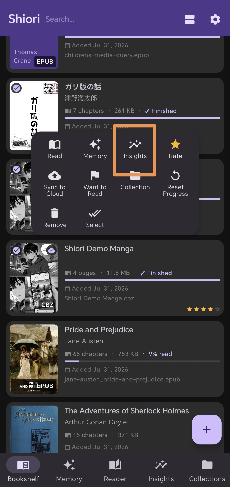
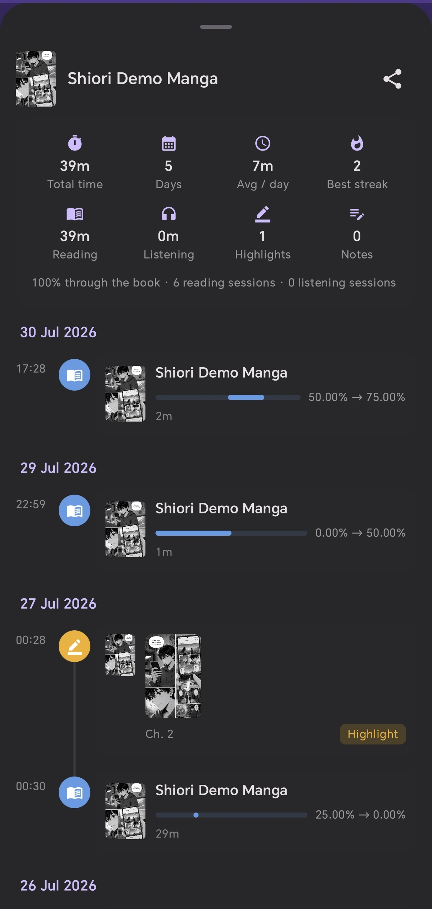
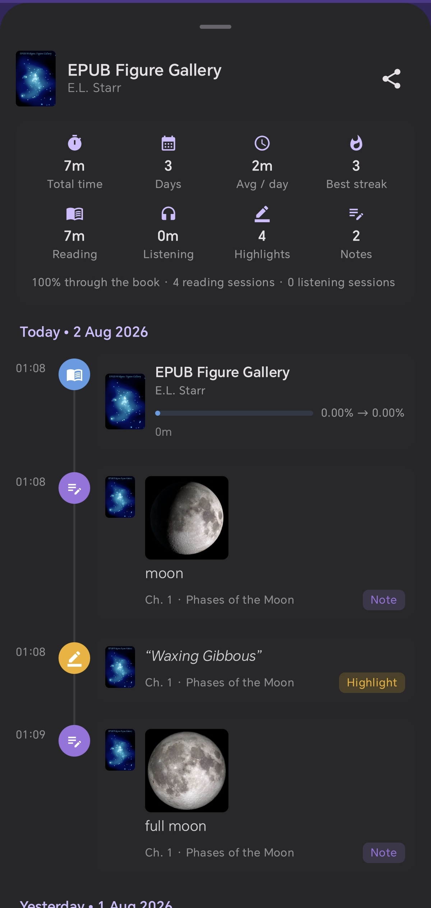

Track Your Reading Journey with
Book Timeline & Reading Progress
บันทึกและติดตามเส้นทางการอ่านหนังสือของคุณ
ด้วย Book Timeline & Insights รายเล่ม
読書タイムラインと進捗グラフで
読書体験を記録・振り返り
通过图书时间线与阅读进度
追溯您的专属阅读之旅
Finishing a book is rewarding—but seeing how you got there can be just as motivating. Most e-book readers only show a simple percentage. Shiori introduces Book Timeline, turning every book you read into a personal historical memory.
การอ่านหนังสือจนจบเล่มเป็นความรู้สึกที่ยอดเยี่ยม — แต่การได้เห็น "เส้นทางการอ่าน" ว่าเราผ่านก้าวไหนมาบ้างก็สร้างแรงบันดาลใจได้ไม่แพ้กัน Shiori ช่วยเปลี่ยนเปอร์เซ็นต์การอ่านธรรมดาให้กลายเป็น Book Timeline ที่บันทึกความทรงจำการอ่านรายเล่มของคุณอย่างงดงาม
一冊の本を読み終える達成感はもちろん、「どのように読んできたか」 という軌跡を振り返ることも大きなモチベーションになります。Shioriの読書タイムライン機能は、単なる進捗率を超えて、本ごとの読書体験を鮮やかに記録します。
读完一本书固然让人成就感十足，但回味“我是如何一步步读完它的”过程同样充满乐趣。Shiori 的图书时间线 (Book Timeline) 功能，将简单的阅读百分比化为一部专属于您的图书阅读史。
Video Walkthrough (YouTube Shorts)
วิดีโอสาธิตการใช้งาน (YouTube Shorts)
動画で見るガイド (YouTube Shorts)
视频演示指南 (YouTube Shorts)
Watch the quick visual guide to see Book Timeline & Insights in action:
รับชมวิดีโอแนะนำสั้นเพื่อดูการทำงานของ Book Timeline & Insights:
読書タイムラインとインサイト機能の実際の動きをご覧ください：
观看短视频演示，直观感受图书时间线与阅读统计功能：
Most reader apps show a static percentage like "65% completed." Once you close the book, that context vanishes. Shiori treats your reading as an evolving story.
By long-pressing any book cover on your bookshelf and selecting Insights, you unlock dedicated analytics for that specific title.
💡 Quick Action
Long-press any book card in your bookshelf library tab to open the context menu and tap Insights.
แอปอ่านอีบุ๊กทั่วไปมักแสดงเพียงตัวเลขสถิตินิ่งๆ เช่น "อ่านแล้ว 65%" ซึ่งเมื่อปิดเล่มไป ข้อมูลเหล่านั้นก็มักจะถูกลืมไปในทันที แต่ Shiori เชื่อว่าการอ่านหนังสือแต่ละเล่มคือเรื่องราวที่มีคุณค่า
เพียงแตะค้างที่ปกหนังสือเล่มใดก็ได้บนชั้นหนังสือ แล้วเลือก Insights (สถิติการอ่าน) คุณจะพบบอร์ดวิเคราะห์ข้อมูลเฉพาะของหนังสือเล่มนั้นทันที
💡 วิธีเปิดใช้งานง่ายๆ
กดแตะค้าง (Long-press) ที่ปกหนังสือบนชั้นหนังสือ Shiori เพื่อเปิดเมนูลัด แล้วเลือก Insights
「65%完了」というスタティックな数字だけでは、いつどのように読み進めたかは分かりません。Shioriでは、読書を継続的な体験として扱います。
本棚にある書籍のカバーを長押しして Insights（インサイト） をタップするだけで、その本専用のアナリティクス画面を開くことができます。
💡 クイック操作
本棚画面で書籍カバーを長押しし、コンテキストメニューから Insights を選択します。
大多数阅读器只展示静态的“已完成 65%”，关闭图书后这些痕迹便不复存在。在 Shiori 中，每一本书的阅读过程都被妥善纪录。
只需在书架上长按任意图书封面并选择 Insights（阅读统计），即可解锁该图书的专有数据分析面板。
💡 快捷操作方法
在 Shiori 书架界面长按图书封面，在弹出的快捷菜单中轻触 Insights 即可查看。

Inside the Book Insights dashboard, you gain a detailed breakdown tailored specifically to that single title:
- 📈 Reading Progress Curve: Visualizes how your reading pace evolved over days and weeks.
- ⏱️ Time Spent Reading: Total hours and minutes dedicated to this specific book.
- 📅 Reading Timeline: Complete date-stamped log showing when you started, paused, and resumed.
- 📚 Chapter Breakdowns: Tracks reading velocity across chapters.
แดชบอร์ด Book Insights จะสรุปข้อมูลเชิงลึกเฉพาะของหนังสือเล่มนั้นๆ ให้คุณเห็นอย่างชัดเจนและครบถ้วน:
- 📈 กราฟความคืบหน้าการอ่าน: แสดงเส้นโค้งการเติบโตของการอ่านว่าคุณอ่านไปกี่เปอร์เซ็นต์ในแต่ละวัน
- ⏱️ เวลาอ่านสะสมรายเล่ม: บันทึกจำนวนชั่วโมงและนาทีทั้งหมดที่คุณทุ่มเทให้หนังสือเล่มนี้
- 📅 ไทม์ไลน์วันเวลา: บันทึกวันที่เริ่มต้นอ่าน วันที่อ่านต่อเนื่อง และวันที่อ่านจบอย่างแม่นยำ
- 📚 ความเร็วการอ่านรายบท: ช่วยให้เห็นอัตราการอ่านในแต่ละบท
Book Insights ダッシュボードでは、一冊の本に関する詳細な統計データを可視化します：
- 📈 読書進捗グラフ： 日ごとの読書ペースの変化をグラフで分かりやすく表示。
- ⏱️ 総読書時間： その本に費やした合計時間（時間・分）を正確に記録。
- 📅 読書タイムライン： 読み始めた日、途中の記録、読了日までの完全な履歴。
- 📚 章ごとの読書ペース： 各章での読書速度や所要時間を分析。
进入 Book Insights 专属面板，您将获得针对该本图书的全维度统计分析：
- 📈 阅读进度曲线： 可视化呈现在数天或数周内的阅读进度攀升轨迹。
- ⏱️ 专注阅读时长： 精准统计您倾注在这本书上的累计小时与分钟。
- 📅 阅读时间线： 记录起始阅读日期、阅读中断与重启的具体时间节点。
- 📚 章节阅读速率： 了解您在不同章节的阅读节奏与投入度。

Thick novels, academic textbooks, or complex language learning materials can often feel intimidating. Seeing visual feedback of your steady progress builds momentum and keeps you engaged.
Whether you read 10 minutes before bed or 2 hours over the weekend, small sessions accumulate into impressive milestones on your Book Timeline.
🎯 Perfect for Every Reader
Ideal for novel enthusiasts, students, researchers, and foreign language learners reading with multi-language TTS and AI translation.
นิยายเล่มหนา ตำราวิชาการ หรือหนังสือภาษาต่างประเทศอาจดูน่าเกรงขามเมื่อมองจากจำนวนหน้า แต่การได้เห็นกราฟความคืบหน้าที่ขยับขึ้นทุกวันจะช่วยสร้างแรงจูงใจและสร้างนิสัยการอ่านอย่างสม่ำเสมอ
ไม่ว่าคุณจะมีเวลาอ่านเพียงวันละ 10 นาทีก่อนนอน หรืออ่านยาว 2 ชั่วโมงในวันหยุด การอ่านทีละนิดจะถูกรวมเป็นความสำเร็จชิ้นใหญ่บน Book Timeline ของคุณเสมอ
🎯 เหมาะสำหรับนักอ่านทุกกลุ่ม
ตอบโจทย์ทั้งคอนิยาย นักเรียน นักวิจัย และผู้เรียนภาษาที่ใช้ฟีเจอร์แปลภาษาอัจฉริยะและ TTS ฟังเสียงอ่าน
長編小説や分厚い専門書も、毎日の努力が可視化されることで途中で挫折しにくくなります。小さな積み重ねが確かな進捗となってグラフに現れます。
寝る前の10分間の読書も、週末のまとまった読書時間も、すべてが大切なステップとしてタイムラインに刻まれます。
🎯 すべての読者におすすめ
小説ファン、学生、研究者、そして多言語TTSや翻訳機能を活用する語学学習者に最適です。
面对厚重的长篇小说或专业学术书籍时，可视化的进度的反馈能有效缓解阅读焦虑。看着进度的曲线稳步上升，能极大激发读完图书的动力。
无论是睡前 10 分钟的碎片阅读，还是周末 2 小时的沉浸式阅读，每一次阅读都会转化为图书时间线上的里程碑。
🎯 适合所有类型的读者
小说爱者、学生、科研人员，以及配合多语言 TTS 朗读与 AI 翻译学习外语的语言学习者。

Ready to Track Your Reading Journey?
Download Shiori EPUB Reader today and turn every book into a rewarding experience with Book Timeline, multi-language TTS, AI translation, and cloud sync.